La Griglia
Una struttura ordinata che si rivela progressivamente. Le immagini emergono dai margini e si compongono nello spazio.
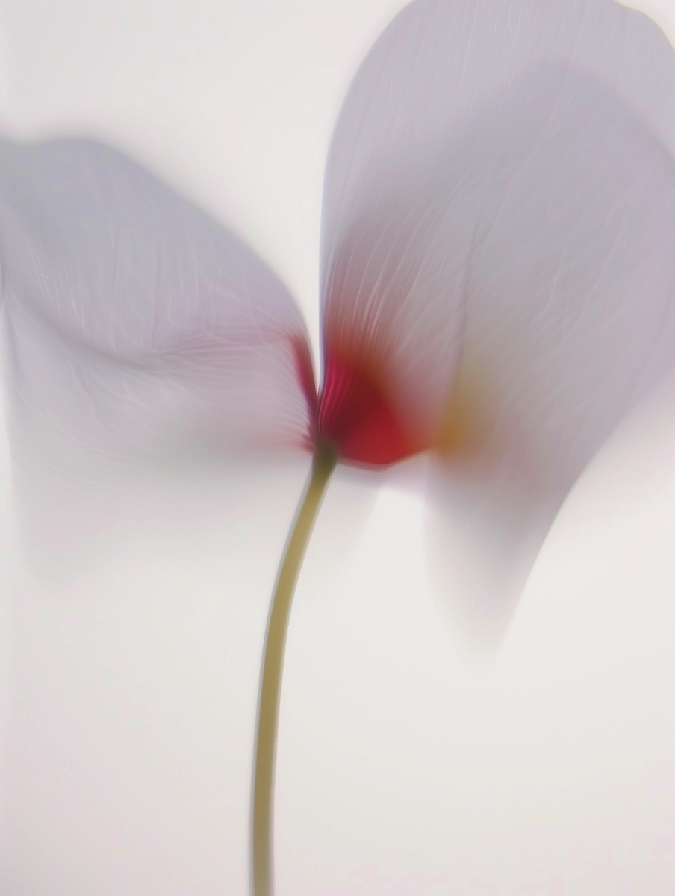
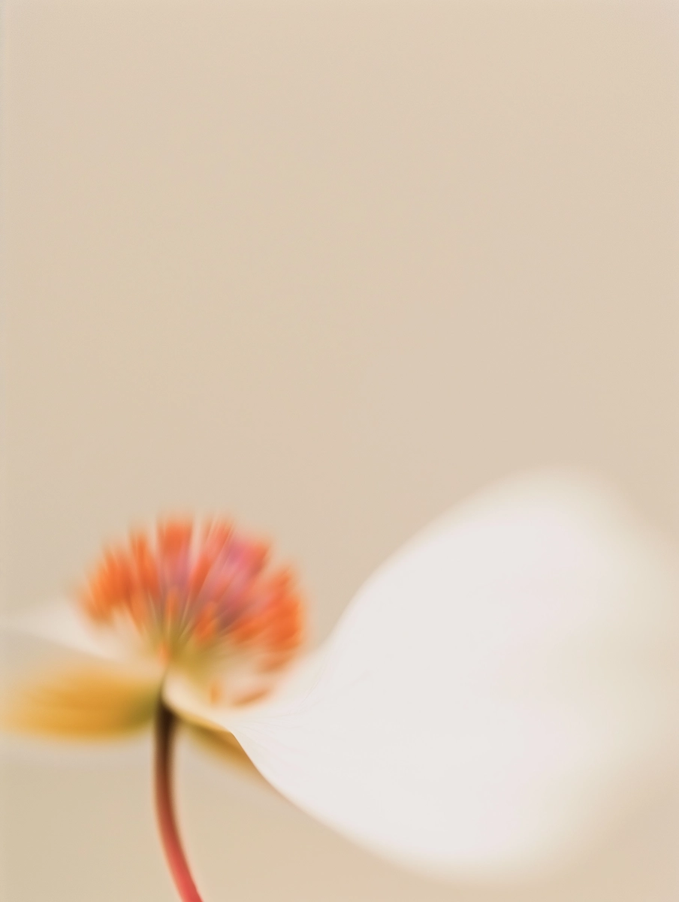
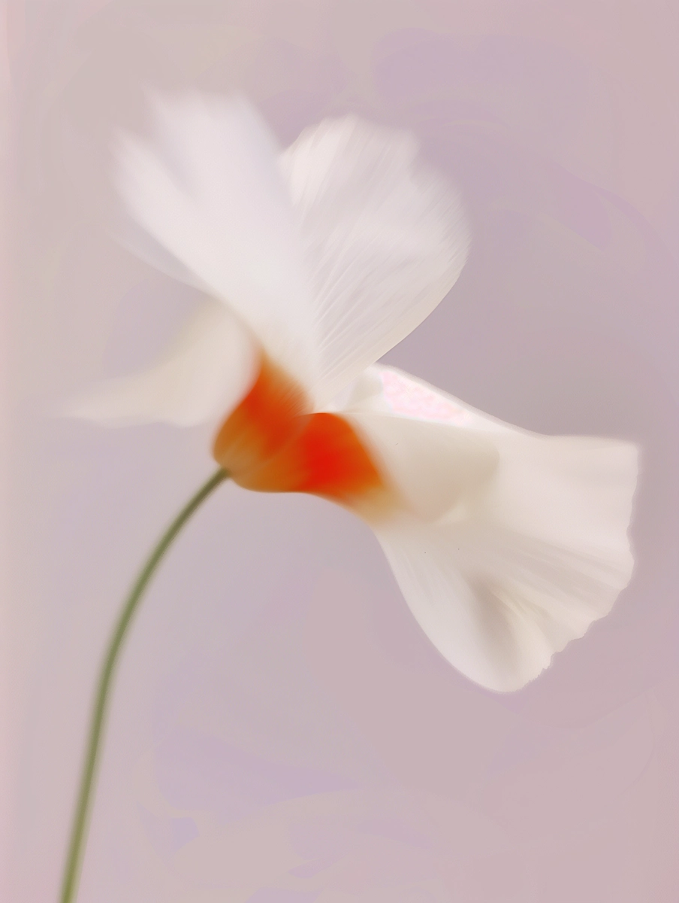
La Gravità
Il movimento si fa peso. Frammenti visivi precipitano e rimbalzano, collegando lo scorrimento alla fisica della caduta.
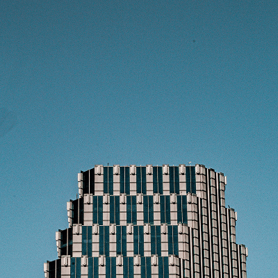
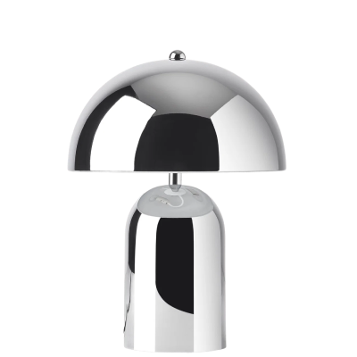
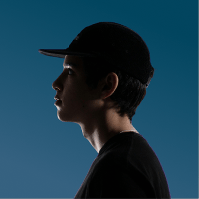
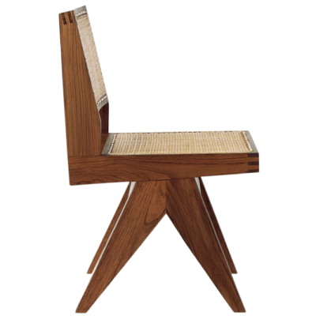
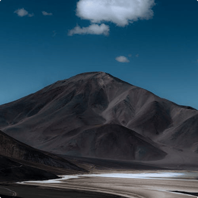
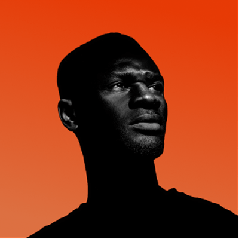
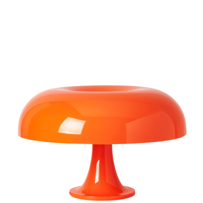
Le Traiettorie
Dalla pila al tracciato curvo. L'informazione si dipana nello spazio seguendo un flusso sinuoso, svelando la sequenza un elemento alla volta.

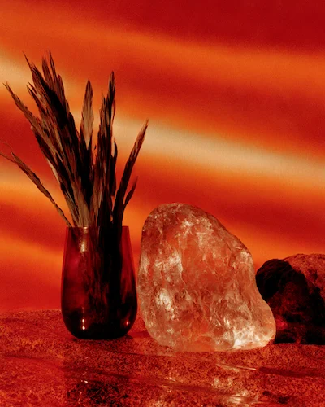


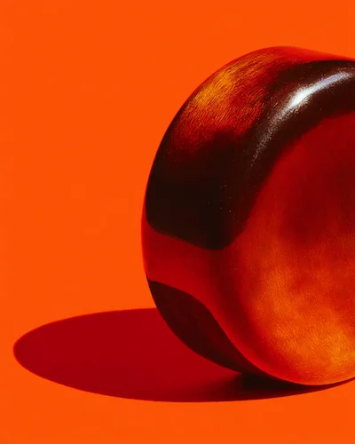